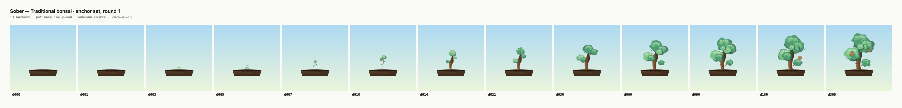

A calibration pass on the Traditional style: 13 hand-tuned anchor SVGs and a 366-row growth schedule covering every day from 0 to 365. Goal of this round is to lock the painterly look, the pot baseline, and the parameter schema — not to ship final density. Days 1–30 will densify in round 2 once the look is approved.
Contact sheet · all 13 anchors at consistent baseline

Pot baseline (1px grey rule) is identical across every cell. Scroll horizontally if the sheet is wider than your viewport.
Pot baseline y=460 identical across all 13 anchors (see grey rule on contact sheet).
Style readable from silhouette by day 14 — vertical trunk, gentle S-curve, balanced canopy.
Growth schedule covers all 366 days; every anchor referenced exists as a file.
Transparent backgrounds, no baked-in shadows, no embedded raster.
Foliage built from organic bezier blobs (not bare ellipses) — painterly silhouette.
Named groups in SVGs: #pot, #trunk, #branches, #leaves, #roots, #moss, #gnarl — engineer can re-color or animate per layer.
Known gaps · round 2
Round 2 will densify days 1–30 to roughly every 2 days, add a richer bark-shading param for trunk readability at small sizes, and revisit autumn-fleck behavior on d180/d365 once you've seen them at real product scales. Cascade and Windswept styles are deliberately untouched until the Traditional recipe is locked.